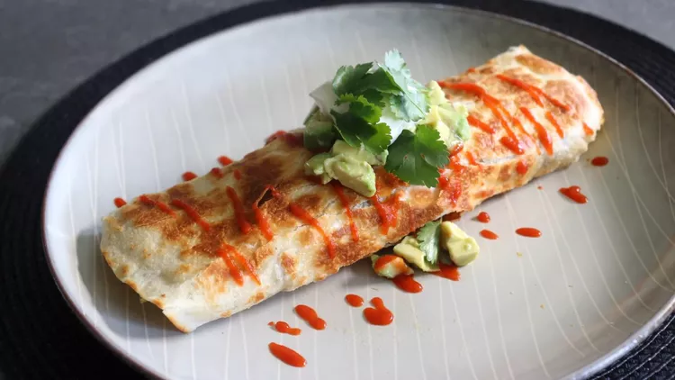

Burrito Recipe
Home

Description
I've always loved the idea of a breakfast burrito, but I've never been crazy
about the execution. It always seemed like we were rolling up a bunch of
random breakfast ingredients in a tortilla. Plus, it always bothered me that
just a little of the top and bottom got browned, I mean, what about the sides?
Here I'm going to show you a technique that takes care of both of those issues
and will work no matter what ingredients you decide to use.
Ingredients
- 1 large russet potato, peeled and cubed
- 1 pinch cayenne pepper, or to taste
- ¼ cup sliced onion
- ¼ cup sliced bell pepper
- (10 inch) flour tortillas
- 1 medium avocado, cubed
Steps
- Place cubed potatoes into the pan of bacon fat and set heat to medium. Season with salt, black pepper, and cayenne. Cook, tossing and turning occasionally, until the potatoes are browned, crispy, and tender, 8 to 10 minutes. Add onions and peppers, and cook until they soften up a bit, 2 to 3 minutes. Transfer everything into a strainer set over a bowl to drain excess bacon fat.
- To make one breakfast burrito, place 2 strips cooked bacon back in the pan. Turn heat to medium and scatter 1/2 of the potato mixture in and around. Scatter over 1/2 of the Cheddar cheese as evenly as possible, and then pour 2 beaten eggs over top.
- Tilt the pan to make sure the egg is evenly distributed. Place a tortilla over the top and press down lightly into the rest of the ingredients. Cook just until the eggs firm up enough to flip, about 1 minute. Use a spatula to carefully, but confidently, flip everything over so the tortilla is now on the bottom. Cook until the tortilla is as browned and crispy as you like, 2 to 3 minutes.
- Remove from the heat and transfer onto a plate. Roll into a burrito and serve with hot sauce, avocado, sour cream, and cilantro. Repeat to cook remaining burrito.